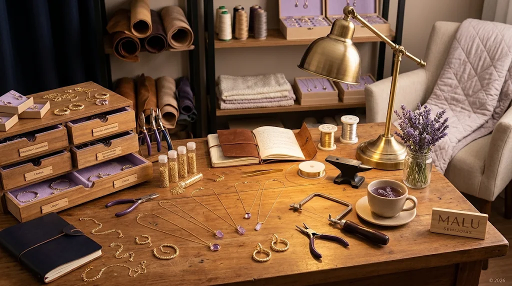

Nossa História
Conheça a trajetória de paixão, produção própria e alta joalheria que deu origem à Malu Semijoias.

O Começo de um Sonho
A Malu Semijoias nasceu da paixão em transformar metais e pedras brutas em memórias inesquecíveis. Tudo começou em uma pequena bancada artesanal, onde cada peça era desenhada e polida manualmente com rigor e dedicação.
Com o compromisso inegociável pela excelência, expandimos nossa produção própria sem perder a essência do trabalho cuidadoso e exclusivo. Hoje, vestimos momentos especiais com o brilho atemporal do ouro 18k e da prata 925.
Nossos Diferenciais & Qualidades
O que nos torna únicos no mercado de alta joalheria acessível.
Produção 100% Própria
Acompanhamos cada etapa do processo produtivo, garantindo design autoral e acabamento artesanal perfeito.
Garantia Vitalícia
Confiança total no nosso banho em Ouro 18k e Prata 925. Garantimos a durabilidade e o brilho eterno da sua peça.
Tecnologia Hipoalergênica
Todas as nossas semijoias são 100% livres de níquel e recebem camadas extras de verniz suíço protetor.
Envio com Seguro Joia
Sua encomenda viaja protegida com seguro total contra extravios até chegar com segurança à sua porta.